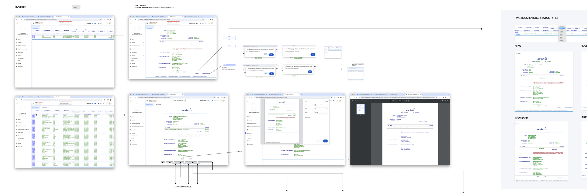
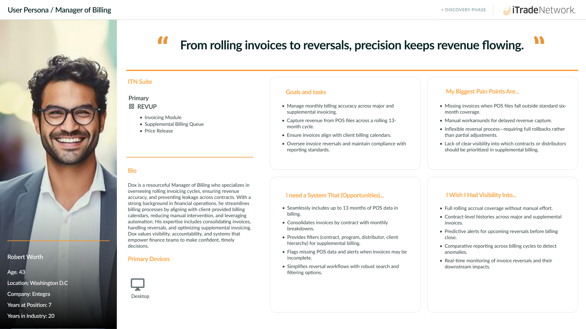
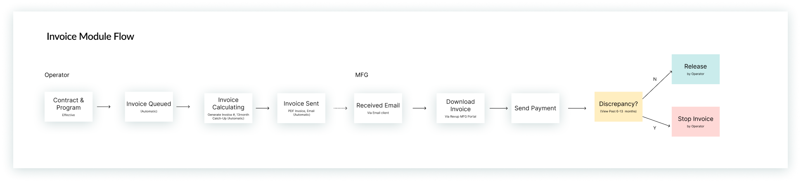

Redesigning Revenue Recovery at Scale
How a unified invoicing experience helped Sodexo reclaim $4.5M in manual revenue and return 202 hours annually to finance teams.

The invoice reconciliation process was broken — running on an outdated, unusable interface
Sodexo's finance teams had no system to detect or prioritize missed rebates. Triggered by missing spend, contract changes, and product additions, teams spent hundreds of hours every month on a process that didn't scale — with no visibility into what was recoverable and no consistency across branches.
The risk wasn't just inefficiency. It was uncollected revenue, audit exposure, and an operations team stretched past capacity — every single month.

Click to view full size.
Understanding the real workflow
Before any design work began, I embedded with Sodexo finance users and internal ops teams to map how invoices actually moved through the business. The core finding wasn't a bad UI — it was a complete absence of system awareness around what was missing.
Users were doing detective work every month with no tools to help. Reconciliation lived in spreadsheets. Priorities were set by gut feel. And the language teams used to describe "invoice period" didn't match what the system actually meant — producing incorrect audit outputs without anyone realizing it.
"We spend more time figuring out what we're missing than actually fixing it. There's no system that tells us where to look."
"Everything lives in Excel. We have no idea if what we're looking at matches what the platform calculated."
"When the invoice period filter gives wrong results, we don't catch it until reconciliation — sometimes weeks later."

Robert, Category Manager — one of the primary personas built from these interviews.
Better quickly, not perfect later
Fixing the VDA invoice process could go many directions. With an Agile mindset and an objective of publishing value quickly, the goal was to determine where we could provide the most impact with the least friction — and park everything else without abandoning it.
- 13-month rolling invoice visibility
- Auto 6-month POS catch-up
- VDA calculation & invoice alignment
- Supplemental month manual control
- 7-year history via API
- Split invoice business segment filter
- GPO roll-up grouping scenarios
- Advanced multi-period picker component
- Cross-branch reconciliation views
This framing — based on Lean UX hypothesis prioritization — gave the broader stakeholder team a clear view of what we were building toward and why certain things were intentionally deferred.

The invoice module flow mapped end-to-end, from contract effective date through release or stop.
Five capabilities that changed the workflow
A rolling view of all billing activity giving finance teams a continuous, uninterrupted window into invoices without manually pulling reports. Nothing falls through the cracks.
Late POS data is automatically reconciled against prior periods — eliminating the manual tracking that previously required a dedicated ops effort every billing cycle.
Manual inclusion for months 7–12 gives teams full flexibility to handle edge cases without workarounds — designed around how Sodexo already thought about billing periods.
Calculation and Invoice tabs designed in sync — same data model, same terminology, same filters — so reconciliation errors caused by mismatched views were eliminated by design, not by process.
Full invoice history — accessible, auditable, and scalable. Multi-period filtering by Invoice Period (not Created Month) lets users run non-contiguous, multi-year audits in a single view. A critical capability restored after it was lost in the platform rewrite.
Designing for trust, not just usability
Finance users don't just need a usable interface — they need to trust the data they're looking at. That became the design principle that guided every decision across the module.
I embedded with Sodexo finance users and ops teams to understand how invoices actually moved through the business. Stakeholder interviews and workflow mapping revealed that the biggest pain was upstream of any UI — there was no system awareness of what was missing, making reconciliation a monthly detective job.
Finance domain complexity required deep collaboration with SMEs. Concepts like "Invoice Period vs. Created Month" weren't just terminology choices — getting them wrong in filter design produced incorrect audit outputs. I authored detailed acceptance criteria alongside UX specs to close the gap between design intent and implementation.
Design decisions were deliberately considered: consistent column structures between grid and CSV export, explicit period labels, disabled states that explain why something is unavailable rather than just greying it out, and microcopy written to reduce cognitive load. Every tooltip was a trust signal, not just a label.
I worked closely with engineering through implementation — reviewing builds for design fidelity, flagging regressions before QA, and updating specs in real time as edge cases surfaced. Post-launch, I tracked support ticket patterns to identify friction that didn't show up in testing.
The shipped UI was a massive step up from the legacy screens: VDA Calculation and Invoice now share one coherent information architecture, so users navigate a single connected flow instead of two disjointed systems. Status, filters, and key figures are surfaced clearly enough to be perceived at a glance — not decoded.
Fewer missed rebates. Cleaner audits. More reliable invoices.
85% faster per billing cycle. Finance teams moved from an hour of manual reconciliation to a 10-minute review.
Across 242 invoices per year — equivalent to over a full month of capacity given back to the team.
Of full-time work freed annually, allowing the ops team to redirect effort toward higher-value reconciliation work.
"The design work on RevUP didn't just improve a screen — it changed how our team thinks about invoice reconciliation. For the first time, we're operating proactively instead of reactively."
Interested in working together?
I'm open to senior product design roles in B2B SaaS, enterprise tools, and complex data-heavy domains.